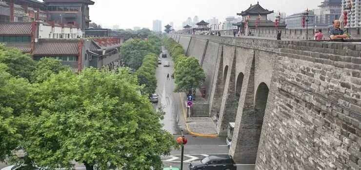
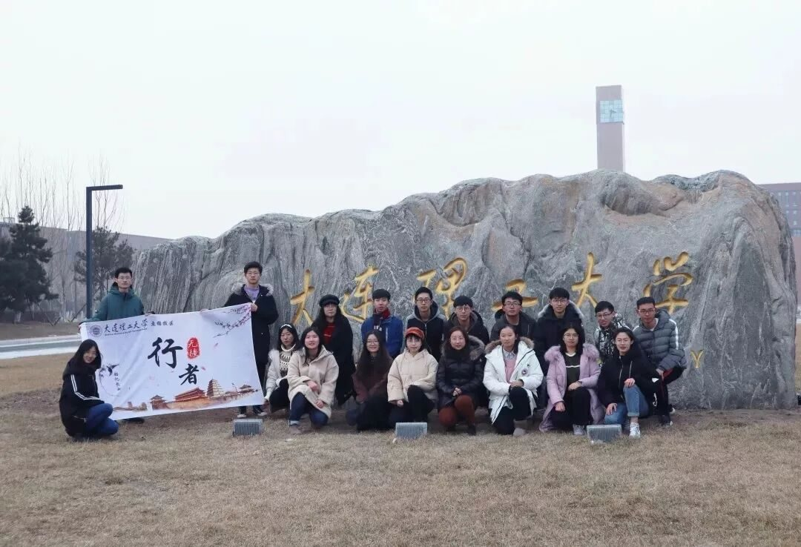
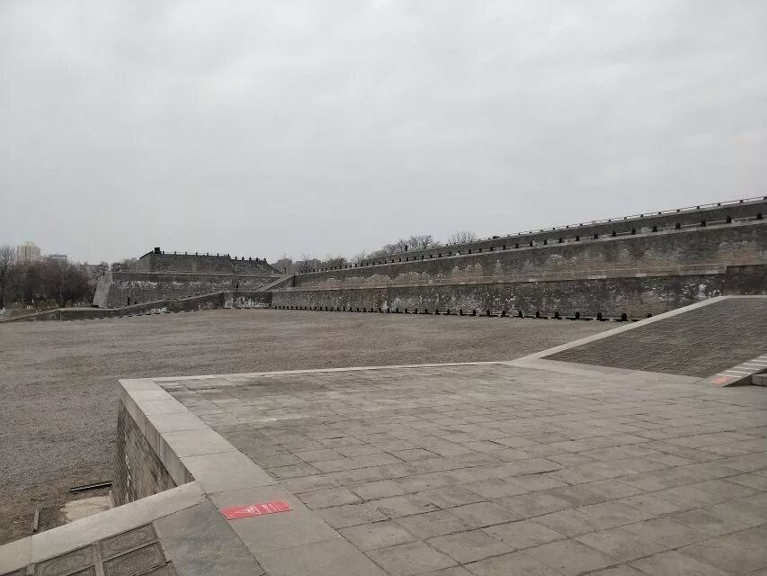
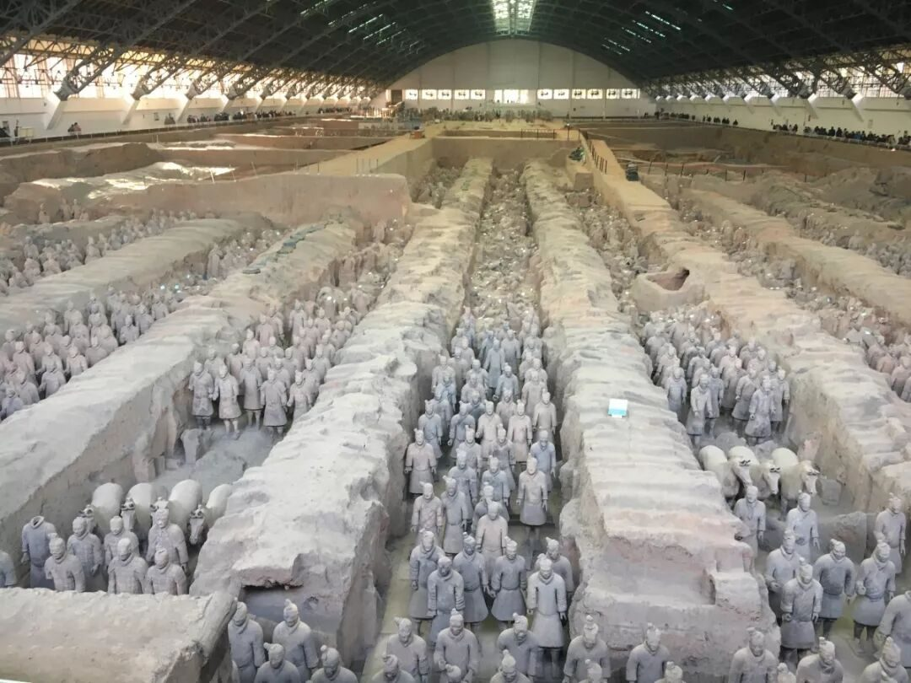
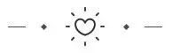

【秦简拓语·十二】这是一次很特别的告白-致行者无疆




若说岁月匆忙时间飞逝，不妨说是知己相遇措谈忘我，我曾怀着对文化的追许，加入你的大家庭，这算起来与你相识便有一载春秋啦，这期间我们一起成长，增长见识，先是去安徽冒酷暑拾非遗，后是赴西安临寒冬访古迹，虽然每次实践期间都是困难重重，但我们从未丧气过反而越挫越勇，就在这个1月，携18位行者，脚踏霜雪，再度启航。
与卿相随
初到西安
7日行，与卿相随，初到西安，就被车站外的明城墙所吸引，巍峨高挺绵延不断，站在城墙之上，望着护城河，仿佛置身当年战乱纷争，如今所见城墙破损之处也是尽显时代变迁。古有三顾茅庐，现有两顾陕西博物馆，在陕博我们不仅认真参观了文物，了解每个文物后面的历史故事，还聆听了专家讲座，与专家们商讨文物保护现状，虽劳累不堪但收获的远远多于想象。

◆一路走来，见过盛唐世下的芙蓉园，也见过了支离破碎的大明宫，一堆堆土坡，一根根残柱，便是在大明宫遗址所能见的，令我们欣慰的是这些遗迹被完好保存，工作人员告诉我们，他们并没有选择在遗址上重新修建宫殿，因为他们认为保护遗址，就要保持遗址的历史感，同时也要充满活性，并不一定要圈起来加以框架阻隔，可以给世人去接触，去领会的机会，对于这种保护理念，我们十分赞许，值得我们后期学习。

“爱护有其道，开挖有其理”，用来形容秦兵马俑博物馆再合适不过，该博物馆与我之前想像的完全不一样，博物馆规模巨大，设立了多个展厅，我发现除1，2号展厅之外，其他的大多数展厅所能见的便是几亩平地，其缘由是目前国家虽有能力开挖，却没有能力维持原状，刚出土的兵马俑颜色绚丽，出土后由于保护不周，就呈现的现在的黄土色状，博物馆为了更好保护这些文物，决定停止开挖，待技术成熟后在进行现世其壮观。

这就解释了其他的展厅为什么是一片荒地，其实对文物最好的保护就是让它待在初始之地，不合时机的开挖就等同于一定程度的破坏，与其破坏倒不如换种方法去保护，在一定程度这乃是明智之举，同时这也符合我们这次实践的初衷。

言虽不多，需共勉之，记得窗外大雪纷飞，你我凌晨屋中商议，记得临考面试场外候令，你我选人纷争不一，记得回民街上我说挺贵，你说开心便好，也记得大家密办行者生日会，让他感动流泪，你曾说长夜漫漫路且遥，可为何相识谈笑却不过周，临行你说有缘会再见，我说后会必有期，真心感谢你行者无疆，让我又拥有一段值得珍藏的美好记忆，今生有幸与你们相遇，若不弃定陪伴永远。

来源丨行者无疆实践团
文字丨江新林
排版丨牛直达
审核丨潘雯雯 邓子孚
行者无疆实践团
QQ：2758025831

随行者一起认识世界
长按二维码关注